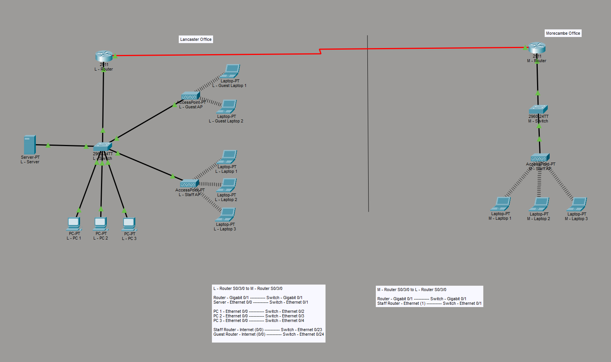
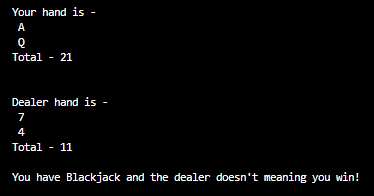
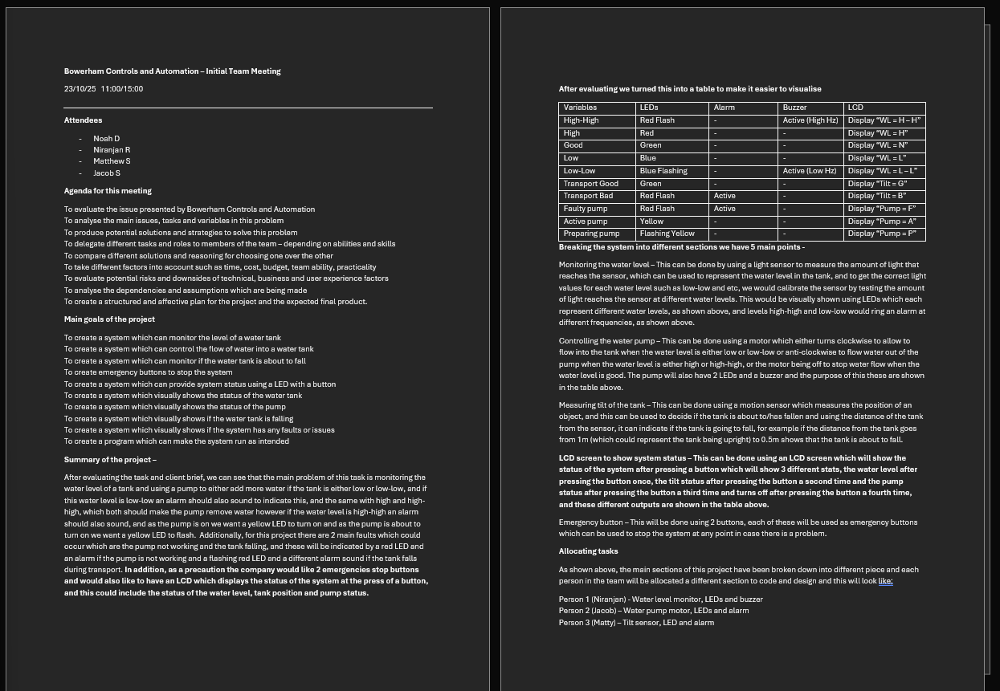
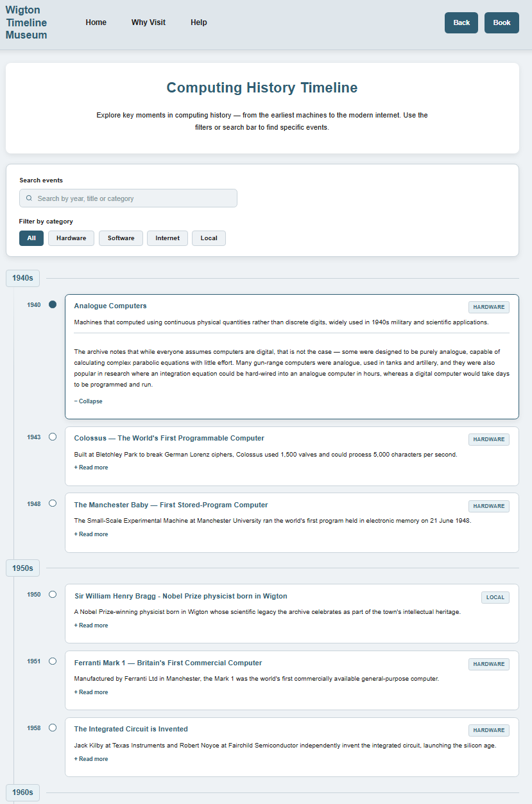
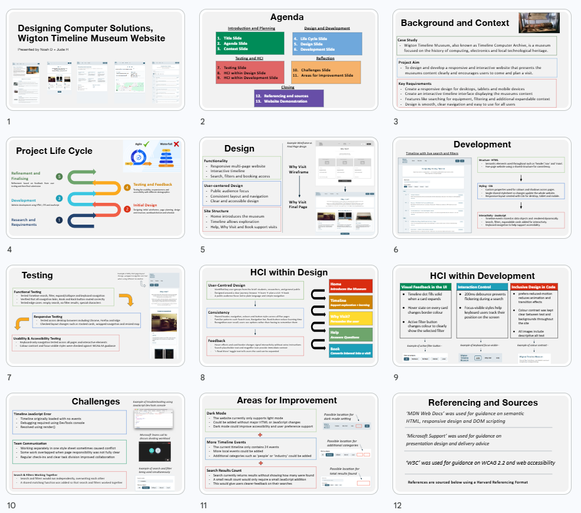
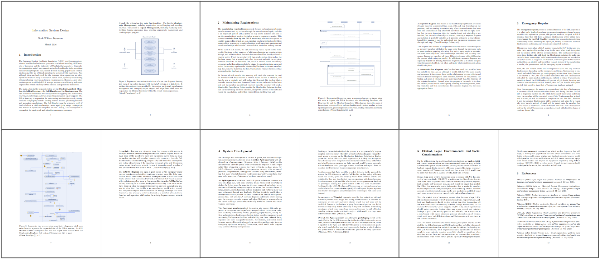
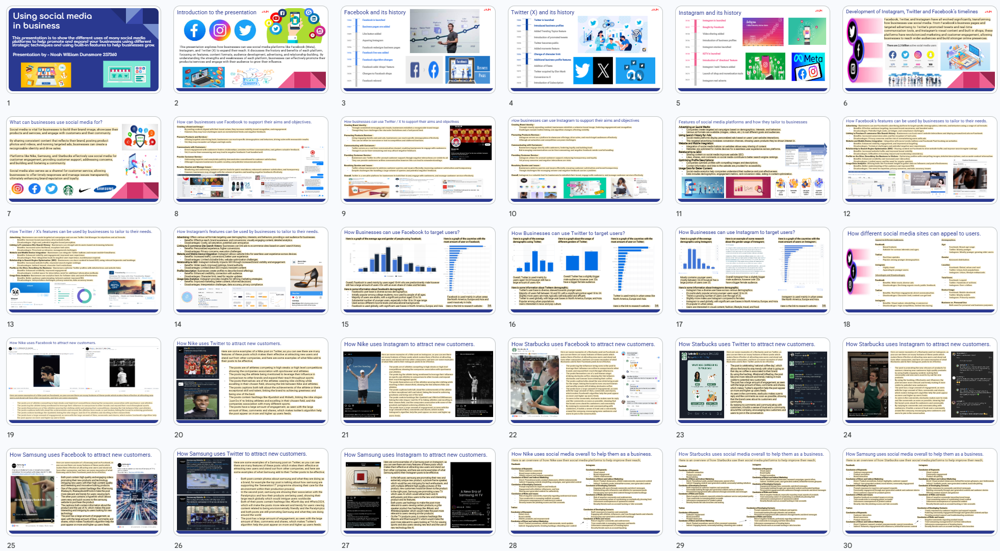
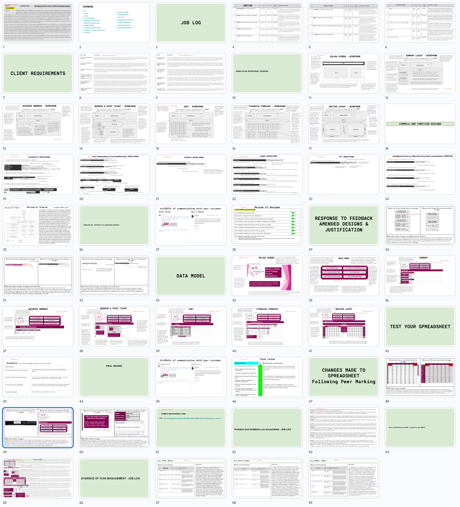

Computer Science Student
First-year Computer Science student at the University of Cumbria (in Lancaser)
with intrests in web development, networking, infrustructutre, programming,
software engineering and software development.
Before University, I studied at Blackpool Sixth Form College doing an A Level in Computer Science,
and a double Level 3 BTEC in IT (RFQ), achiving a total of 136 UCAS points.
At both University and Sixth Form I have developed multiple practical projects
which have provided great insights into many different areas of Computer
Science and has taught me many useful skills in the field of computing.
BSc Computer Science first year modules completed at the University of Cumbria.
Designed and implemented a network solution for small business.
Overview - This module introduced the design, implementation and maintenance of computer networks and IT infrastructure and through the useage of practical analysis and network simulation, I explored how organisations plan, secure and manage network environments.
Project Work - The first assessment focused on evaluating networking solutions for a fictional organisation and this involved analysing hardware and software requirements, identifying potential risks, considering security implications and recommending suitable infrastructure based on business requirements.
The second assessment involved designing and implementing a complete multi-site business network using Cisco Packet Tracer, of which included separate departments connected through VLANs, DHCP and DNS services, secure wireless networking, SSH remote administration and routing between multiple office locations, which also required troubleshooting connectivity issues and validating network functionality through testing.
Skills Developed:
Developed a playable card game using Python and another programming language.
Overview - This module introduced fundamental programming concepts and software development techniques through the creation of a functional software application.
Project Work - The assessment required the development of a playable card-based game using Python alongside a comparison with a second programming language, which involved planning the solution, implementing game mechanics, handling user input, testing functionality and debugging errors.
In addition to producing the final application, I also had to documented the development process, evaluate programming approaches and compared the strengths and limitations of different languages for solving the same problem.
Skills Developed:
Worked in a team to build a prototype industrial control system.
Overview - This module focused on breaking down complex problems into manageable components and developing logical solutions through teamwork and computational thinking techniques.
Project Work - Working as part of a group, I helped design and implement an industrial monitoring and control system, of monitored operating conditions and provided visual and audio feedback through LEDs, alarms and status displays.
The project required analysing requirements, producing flowcharts and system designs, developing logic-based control processes and evaluating the effectiveness of the final solution, and in addition, an emphasis was placed on teamwork, communication and iterative testing.
Skills Developed:
Designed and built a responsive interactive website for a museum timeline project.
Overview - This module introduced front-end web development and the principles of creating responsive, user-focused websites.
Project Work - This assessment involved developing a responsive website for a museum's timeline, which required the use of HTML, CSS and JavaScript to create an engaging user experience across multiple screen sizes.
The design process considered accessibility, usability principles and testing procedures to ensure the final product met user requirements and provided an intuitive interface.
Skills Developed:
Analysed and presented the design process behind a computing solution.
Overview - This module explored the wider process of designing successful computing solutions, including user-centred design, project planning and software engineering methodologies.
Project Work - As part of a group presentation, I analysed how computing solutions are designed and evaluated throughout their lifecycle which included researching software development methodologies, human-computer interaction principles, accessibility requirements, quality assurance processes and project management considerations.
The project required presenting findings professionally while demonstrating an understanding of industry-standard design approaches.
Skills Developed
Analysed business processes and designed information system documentation.
Overview - This module focused on analysing organisational requirements and producing structured system designs using recognised modelling techniques.
Project Work - The assessment involved examining business processes and creating design documentation for an information system using UML modelling techniques to represent system behaviour, user interactions and process flows.
The work also explored legal, ethical and professional considerations that influence the design and implementation of information systems within real organisations.
Skills Developed:
Pearson BTEC Level 3 National Diploma RQF in Information Technology from September 2023 to June 2025.
Studied how organisations use IT systems to support business operations.
Overview - This unit introduced the core components of modern IT systems and how organisations use hardware, software, networking and communication technologies to support business operations. Through researching and evaluating different technologies, I built and understanding of how IT systems are designed, implemented and managed within professional enviroments.
Skills Developed:
Focused on database systems and managing information effectively.
Overview - This unit focused on how organisations store, manage and utilise information through database systems. I learnt the principles of database design, data validation, querying and reporting, alongside understanding how structured information supports business processes and decision-making.
Skills developed:
Explored how businesses use social media for communication and marketing.
Overview - This unit explored how organisations use social media platforms to communicate with customers, promote products and services, and strengthen their brand identity. I developed an understanding of content planning, audience targeting, campaign management and the importance of analysing engagement metrics to evaluate the effectiveness of social media strategies.
Skills developed:
Worked with data models to analyse information and support decisions.
Overview - This unit focused on using data to support decision-making through the creation of models and analytical tools. I worked with spreadsheets, formulas, charts and forecasting techniques to organise information, identify trends and present data in a meaningful and accessible way.
Skills developed:
Studied common cyber threats and how organisations respond to incidents.
Overview - This unit introduced common cyber security threats and the methods organisations use to protect systems, networks and data. Topics included malware, phishing, social engineering, risk assessment and incident response procedures, helping me develop an understanding of how organisations identify and manage security risks.
Skills developed:
Developed software solutions using programming fundamentals.
Overview - This unit introduced the fundamental principles of software development and problem solving through programming. I learnt how to design, develop, test and debug software solutions using structured programming techniques, while developing an understanding of algorithms, control structures and good coding practices.
Skills developed:
Planned and reviewed an IT project using project management techniques.
Overview - This unit focused on planning, managing and evaluating IT projects using recognised project management methodologies. I learnt how to define project objectives, manage resources, identify risks and monitor progress while producing professional documentation throughout the project lifecycle.
Skills developed:
Designed and developed a basic computer game.
Overview - This unit introduced the process of designing and developing computer games, from initial concepts through to implementation and evaluation. I explored game mechanics, user experience, testing and development techniques while creating interactive software that balanced functionality with player engagement.
Skills developed:
A small selection of screenshots and extracts from my project work.








x
I am currently looking for summer internships, placements and junior technical opportunities.